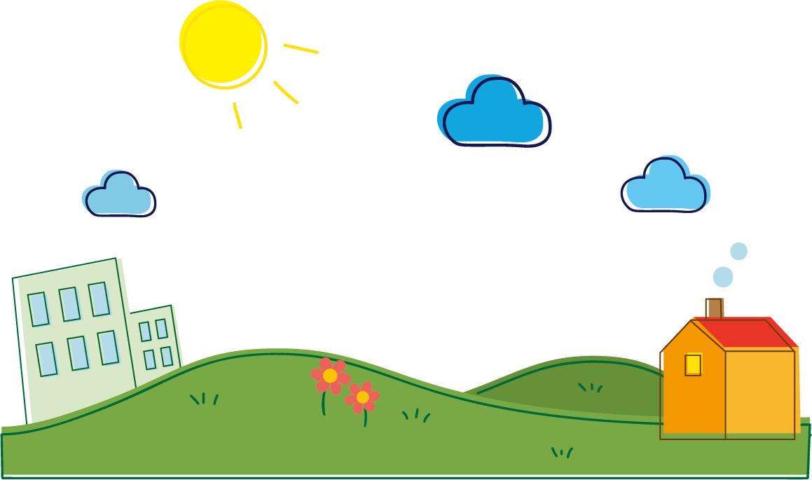
우리의 자손은 어떠한 지구에서 살게 될까요?
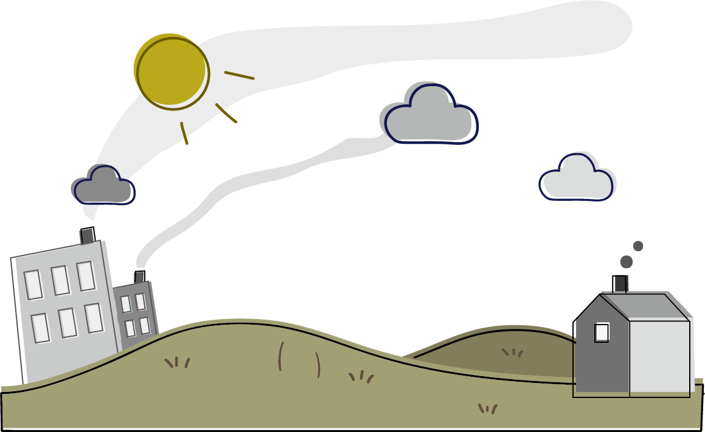
아마 이러한 지구에서 살고 있지 않을까요?

우리가 환경문제를 간과한다면요!
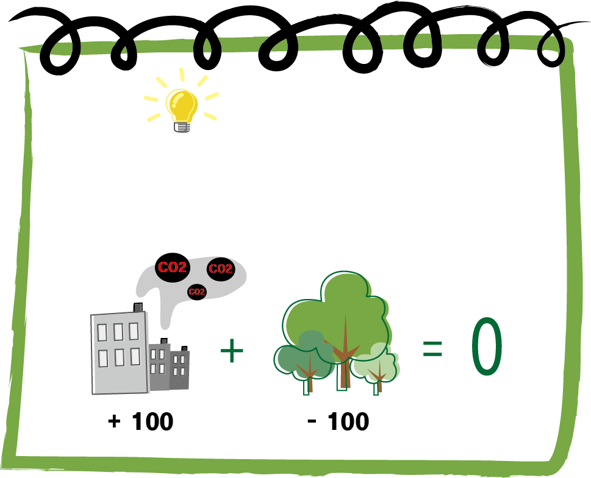
: 이산화탄소를 배출한 만큼 이산화탄소를 흡수하는 대책을 세워
탄소중립이란?
: 이산화탄소를 배출한 만큼 이산화탄소를 흡수하는 대책을 세워
이산화탄소의 실질적인 배출량을 '0'으로 만든다는 개념
왜 생겨났을까?
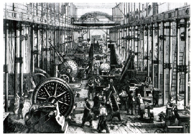 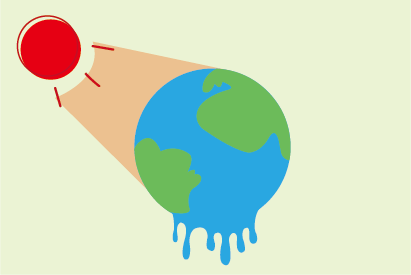 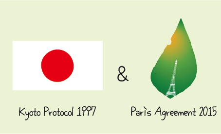산업혁명 이후 환경오염 급속화
기후변화로 인한 피해 증가
교토의정서와 파리협약으로 인한 조약 체결
현재 지구는...
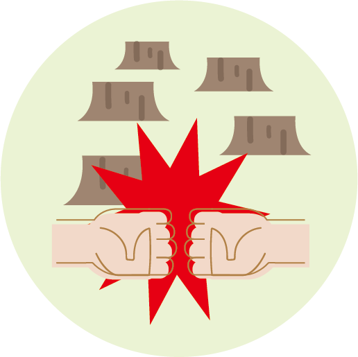 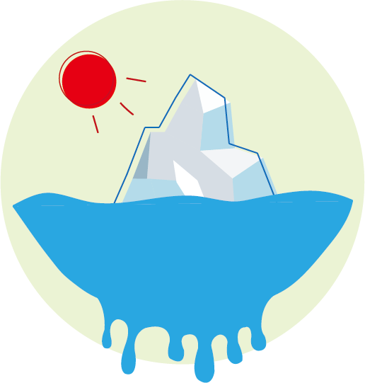- 아마존 파괴로 인한 사회적 분쟁
- 북극과 남극의 해수면 상승
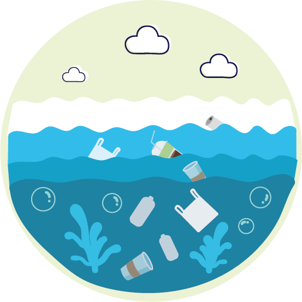 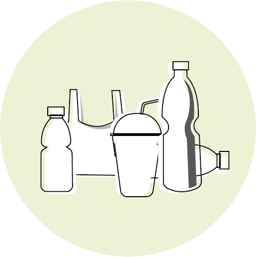
해양쓰레기 증가
플라스틱 남용
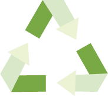
"지금, 탄소중립은 필수입니다."